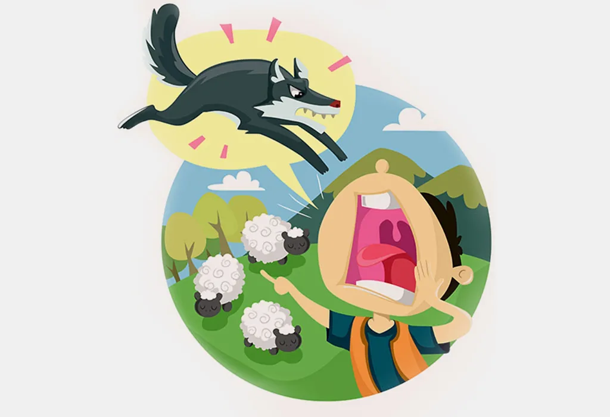
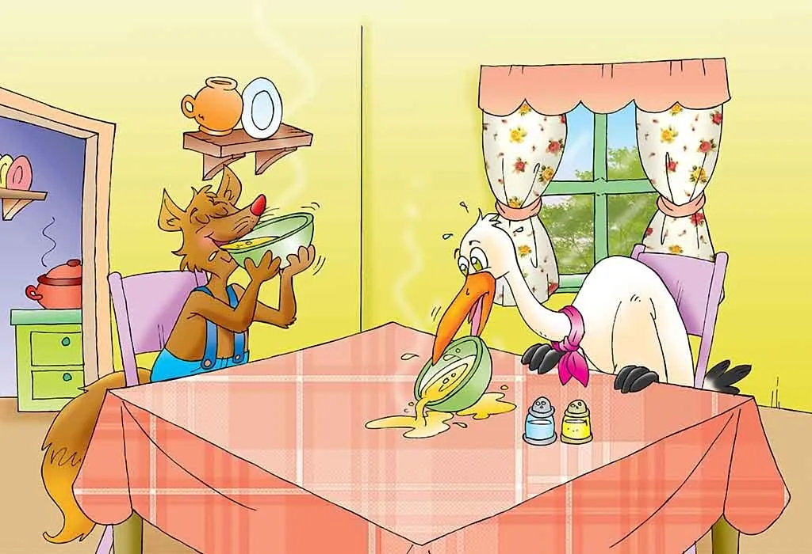

Story: The Boy Who Cried Wolf

In a village, lived a carefree boy with his father. The boy’s father told him that he was old enough to watch over the sheep while they graze in the fields.
Every day, he had to take the sheep to the grassy fields and watch them as they graze.
However, the boy was unhappy and didn’t want to take the sheep to the fields.
He wanted to run and play, not watch the boring sheep graze in the field.
So, he decided to have some fun. He cried, “Wolf! Wolf!” until the entire village came running with stones to chase away the wolf before it could eat any of the sheep.
When the villagers saw that there was no wolf, they left muttering under their breath about how the boy had wasted their time.
The next day, the boy cried once more, “Wolf! Wolf!” and, again, the villagers rushed there to chase the wolf away.
The boy laughed at the fright he had caused. This time, the villagers left angrily.
The third day, as the boy went up the small hill, he suddenly saw a wolf attacking his sheep.
He cried as hard as he could, “Wolf! Wolf! Wolf!”, but not a single villager came to help him.
The villagers thought that he was trying to fool them again and did not come to rescue him or his sheep.
The little boy lost many sheep that day, all because of his foolishness.
Moral of the Story
It is difficult to trust people who lie, so it’s important to always be truthful.Story: The Fox and the Stork

One day, a selfish fox invited a stork for dinner. Stork was very happy with the invitation – she reached the fox’s home on time and knocked at the door with her long beak.
The fox took her to the dinner table and served some soup in shallow bowls for both of them.
As the bowl was too shallow for the stork, she couldn’t have soup at all. But, the fox licked up his soup quickly.
The stork was angry and upset, but she didn’t show her anger and behaved politely. To teach a lesson to the fox, she then invited him for dinner the next day.
She too served soup, but this time the soup was served in two tall narrow vases.
The stork devoured the soup from her vase, but the fox couldn’t drink any of it because of his narrow neck.
The fox realised his mistake and went home famished.